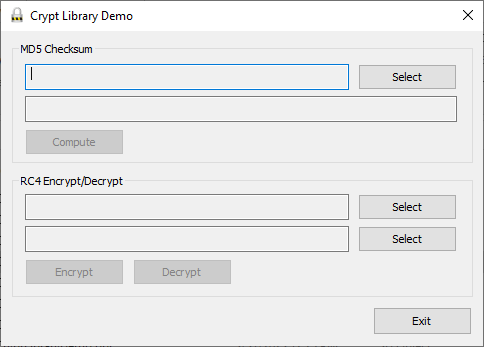

CryptLibraryDemo is a Windows desktop application, written in C++ with the Microsoft Foundation Class (MFC) library, that shows how to use the Microsoft CryptoAPI to compute checksums (hash codes) and to encrypt and decrypt data. Its reusable part is a small set of functions in CryptographyExt.h and CryptographyExt.cpp that you can copy into your own MFC project; the dialog only demonstrates them. The project is described in the Crypt Library Demo article on CodeProject.

In simple terms, cryptography is the application of selected processes for encoding data so that the information can be stored and transmitted securely. The Microsoft CryptoAPI allows developers to build cryptographic security into their applications by providing a flexible set of functions to encrypt or digitally sign data. You can use cryptography to achieve many security requirements, including:
The fundamental cryptographic operations supported by the CryptoAPI are encryption, decryption, and signing. Encryption is somewhat like controlled fragmentation: the data is there, but it's scattered according to the encryption rules. Decryption is simply the inverse of encryption, where the encryption rules are reversed to reassemble the data. Digital signing is analogous to physically hand-signing a document, but with one significant improvement: it is very, very difficult to forge a digital signature. Here you can find more about this subject.
This project covers checksums, encryption and decryption; it does not implement digital signatures. The CryptoAPI is maintained by Microsoft for backward compatibility only: for new development, Microsoft recommends Cryptography API: Next Generation (CNG).
CString or of a file, computed with MD2, MD4, MD5 or SHA-1; the result is raw bytes for a buffer and uppercase hexadecimal text for a string or a file.CLongBinary objects.GetComputerID(), a helper that returns the user name and the computer name as UserName:ComputerName; the demo uses it as the secret key.TraceLastError(), which writes the reason of a failed CryptoAPI call to the debug output.The main implementation is done in CryptographyExt.h and CryptographyExt.cpp files, as follows:
bool GetChecksumBuffer(ALG_ID nAlgorithm, LPBYTE lpszOutputBuffer, DWORD& dwOutputLength, LPBYTE lpszInputBuffer, DWORD dwInputLength); computes the hash code of the given binary buffer, using the specified algorithm; dwOutputLength is the size of the output buffer on input and the size of the hash on output;bool GetChecksumString(ALG_ID nAlgorithm, CString& strResult, CString strBuffer); computes the hash code of the given CString, using the specified algorithm, and returns it as hexadecimal text;bool GetChecksumFile(ALG_ID nAlgorithm, CString& strResult, CString strPathName); computes the hash code of the given file, using the specified algorithm, and returns it as hexadecimal text;bool EncryptBuffer(ALG_ID nAlgorithm, LPBYTE lpszOutputBuffer, DWORD& dwOutputLength, LPBYTE lpszInputBuffer, DWORD dwInputLength, LPBYTE lpszSecretKey, DWORD dwSecretKey); encrypts the given binary buffer, using the specified algorithm; dwOutputLength is the size of the output buffer on input and the size of the ciphertext on output;bool EncryptFile(ALG_ID nAlgorithm, CString strOutputName, CString strInputName, LPBYTE lpszSecretKey, DWORD dwSecretKey); encrypts the given file, using the specified algorithm;bool DecryptBuffer(ALG_ID nAlgorithm, LPBYTE lpszOutputBuffer, DWORD& dwOutputLength, LPBYTE lpszInputBuffer, DWORD dwInputLength, LPBYTE lpszSecretKey, DWORD dwSecretKey); decrypts the given binary buffer, using the specified algorithm; dwOutputLength returns the size of the plaintext;bool DecryptFile(ALG_ID nAlgorithm, CString strOutputName, CString strInputName, LPBYTE lpszSecretKey, DWORD dwSecretKey); decrypts the given file, using the specified algorithm;CString GetComputerID(); returns the user name and the computer name as UserName:ComputerName;bool ConvertBinaryToHexa(LPTSTR lpszOutputBuffer, DWORD dwOutputLength, LPBYTE lpszInputBuffer, DWORD dwInputLength); converts binary data to uppercase hexadecimal text; the overload bool ConvertBinaryToHexa(CLongBinary* pTargetBinary, CLongBinary* pSourceBinary); does the same for CLongBinary objects, allocating the data block of the target with GlobalAlloc;bool ConvertHexaToBinary(LPBYTE lpszOutputBuffer, DWORD dwOutputLength, LPCTSTR lpszInputBuffer, DWORD dwInputLength); converts hexadecimal text back to binary data; the overload bool ConvertHexaToBinary(CLongBinary* pTargetBinary, CLongBinary* pSourceBinary); does the same for CLongBinary objects, allocating the data block of the target with GlobalAlloc;void TraceLastError(LPCTSTR lpszLibrary, LPCTSTR lpszOperation, DWORD dwLastError); writes the name of a failed operation and the system message for its error code to the debug output.Every function that returns bool returns false on failure. The header also defines CRYPT_LIBRARY_NAME (the library name that appears in the error traces), MD5CHECKSUM_LENGTH and SHA1CHECKSUM_LENGTH (the sizes in bytes of an MD5 and of a SHA-1 hash: 16 and 20), MAX_CRYPT_TAIL (4096, the room that the file functions add to the output buffer for padding) and MAX_STR_BUFFER (4096, the size of the buffer that receives the message of a CFileException).
Add CryptographyExt.h and CryptographyExt.cpp to an MFC project that has a precompiled header named stdafx.h: the .cpp file includes it first, and it links secur32, netapi32, crypt32 and advapi32 by itself. The functions can then be used as follows (to keep the example short, it does not check the results):
#include "CryptographyExt.h"
// Checksum of a file: strChecksum receives 32 uppercase hexadecimal digits
CString strChecksum;
GetChecksumFile(CALG_MD5, strChecksum, _T("report.pdf"));
// The secret key is any block of bytes; here, the characters of a CString
const CString strSecret = _T("my secret");
LPBYTE lpszSecretKey = (LPBYTE)(LPCTSTR)strSecret;
const DWORD dwSecretKey = (strSecret.GetLength() + 1) * sizeof(TCHAR);
// Files: the output file is created, or overwritten if it already exists
EncryptFile(CALG_RC4, _T("report.enc"), _T("report.pdf"), lpszSecretKey, dwSecretKey);
DecryptFile(CALG_RC4, _T("report.out"), _T("report.enc"), lpszSecretKey, dwSecretKey);
// Buffers: leave room for the padding that block ciphers add
BYTE lpszPlain[] = "Hello, CryptoAPI!";
BYTE lpszCipher[sizeof(lpszPlain) + MAX_CRYPT_TAIL];
DWORD dwCipher = sizeof(lpszCipher); // in: size of the buffer; out: size of the ciphertext
if (EncryptBuffer(CALG_RC2, lpszCipher, dwCipher, lpszPlain, sizeof(lpszPlain), lpszSecretKey, dwSecretKey))
{
BYTE lpszRestored[sizeof(lpszCipher)];
DWORD dwRestored = sizeof(lpszRestored); // out: size of the plaintext
DecryptBuffer(CALG_RC2, lpszRestored, dwRestored, lpszCipher, dwCipher, lpszSecretKey, dwSecretKey);
}PROV_RSA_FULL cryptographic provider with the CRYPT_VERIFYCONTEXT flag, so no persistent key container is used, and releases it before returning.GetChecksumBuffer creates a hash object for the requested algorithm, feeds it the data with CryptHashData and reads the result with CryptGetHashParam. GetChecksumString and GetChecksumFile call it and convert the hash to uppercase hexadecimal text; their hash buffer has 16 bytes for CALG_MD5 and 20 bytes for any other algorithm.EncryptBuffer and DecryptBuffer hash the secret key with MD5 and give the hash to CryptDeriveKey, which creates the session key for the requested algorithm. The same secret always produces the same key.CryptEncrypt or CryptDecrypt then transforms in place, so the output buffer must be at least as large as the input. Block ciphers (RC2, DES and Triple DES) pad the data to a multiple of the block size, so the ciphertext can be larger than the plaintext; the file functions reserve MAX_CRYPT_TAIL extra bytes for that. RC4 is a stream cipher: its ciphertext is as large as the plaintext, and applying it twice with the same key restores the data.GetChecksumFile, EncryptFile and DecryptFile read the whole input file into memory. EncryptFile and DecryptFile then create the output file, or overwrite it if it already exists.CryptoAPI call fails, TraceLastError writes [Crypt] <operation>: <message> to the debug output (for example, to the Output window of Visual Studio) and the function returns false. A file exception is also written to the debug output.This is a demonstration project, and it has these limits:
PROV_RSA_FULL provider offers the MD2, MD4, MD5 and SHA-1 hashes and the RC2, RC4, DES and Triple DES ciphers. SHA-2 hashes and AES ciphers are not available: the functions return false (for example, CryptCreateHash fails with NTE_BAD_ALGID for SHA-256). Supporting them would require changes in the library, such as the PROV_RSA_AES provider and larger hash buffers.GetChecksumString hashes the UTF-16 characters of the string, including the terminating null character, so it does not return the usual checksum of the text: for abc the MD5 is 0325B2BC5BC6ECFBAC751818498ECE3F, not 900150983CD24FB0D6963F7D28E17F72. To checksum text in another encoding, convert it and call GetChecksumBuffer with the converted bytes.false.ConvertBinaryToHexa writes a terminating null character, so its output buffer needs 2 * n + 1 characters for n bytes; ConvertHexaToBinary accepts only uppercase digits (0-9 and A-F).GetComputerID() as the secret, so a file can be decrypted only under the same user name and computer name. The names are not secret: this ties a file to a user and a computer, but does not protect it from anyone who knows them. In Debug builds, GetComputerID() also writes both names to the debug output.EncryptFile with CALG_RC4, which works only because RC4 is symmetric. To decrypt a file encrypted with a block cipher, call DecryptFile.hhc.exe), which the build uses to compile the help file hlp\CryptLibraryDemo.hhp.git clone https://github.com/mihaimoga/CryptLibraryDemo.gitCryptLibraryDemo.sln in Visual Studio.msbuild CryptLibraryDemo.vcxproj /p:Configuration=Release /p:Platform=x64The executable and the help file CryptLibraryDemo.chm are written to x64\Release for the x64 platform and to Release for Win32; the Debug configuration uses x64\Debug and Debug. The build also regenerates hlp\HTMLDefines.h from resource.h.
CryptLibraryDemo.exe from the output folder, next to CryptLibraryDemo.chm.There is no automated test suite, so validate changes by running the application.
The public functions are documented with Doxygen comments. To generate the HTML documentation, install Doxygen and run !doxygen.bat from the repository folder: it deletes the previous contents of the html folder and runs doxygen doxyfile.txt.
CryptographyExt.h, CryptographyExt.cpp: the reusable cryptographic functions (checksums, encryption, decryption, conversions and error tracing);CryptLibraryDemo.h, CryptLibraryDemo.cpp: the MFC application class CCryptLibraryDemoApp;CryptLibraryDemoDlg.h, CryptLibraryDemoDlg.cpp: the main dialog CCryptLibraryDemoDlg and the About box;HLinkCtrl.h, HLinkCtrl.cpp: the CHLinkCtrl hyperlink control by PJ Naughter, used by the About box;VersionInfo.h, VersionInfo.cpp: the CVersionInfo class by PJ Naughter, used by the About box to read the version of the application;resource.h, CryptLibraryDemo.rc, res/: the resource identifiers, the resource script and the resource files (the icon and the .rc2 file);stdafx.h, stdafx.cpp, targetver.h: the precompiled header and the target Windows version;hlp/: the HTML Help project that is compiled into CryptLibraryDemo.chm; HTMLDefines.h is generated by the build, so do not edit it by hand;CryptLibraryDemo.sln, CryptLibraryDemo.vcxproj, CryptLibraryDemo.vcxproj.filters: the Visual Studio solution and project;doxyfile.txt, !doxygen.bat: the Doxygen configuration and the script that regenerates the API documentation;CryptLibraryDemo.png: the screenshot shown above;CryptLibraryDemo.html: the same content as README.md, as a standalone HTML help page;ReleaseNotes.html, SoftwareContentRegister.html: the release notes and the register of the third-party components;AGENTS.md: the repository conventions for contributors and coding agents.The work below is still open. It follows from the limits listed under Limitations, and no release dates are set.
OnBnClickedDecrypt has to call DecryptFile: it calls EncryptFile with CALG_RC4 now, which works only because RC4 is symmetric.bool, so the dialog cannot tell why a call failed: a CryptoAPI error or a file error goes to the debug output, and an empty input file is not reported at all. If the functions also returned the reason, for instance in an extra parameter, the dialog could say what went wrong: the input file is empty, another program has a file open, or the output file cannot be written.GetComputerID(), the user name and the computer name: a file can be opened only under the same names, and anyone who knows them can open it. A password box would let the user choose the secret. The TRACE calls in GetComputerID() that write both names to the debug output in Debug builds can be removed at once, because AGENTS.md asks not to log keys.CryptographyExt.cpp do not need the dialog, so they can be tested on their own. Good first cases are known-answer vectors for GetChecksumBuffer (the MD5 of abc is 900150983CD24FB0D6963F7D28E17F72), a round trip with every cipher for inputs shorter than, equal to and longer than a cipher block, decryption with a wrong key, an empty or missing file, and the hexadecimal converters. A GitHub Actions workflow could then build the solution and run the tests for every pull request; the .github folder has no workflow yet.PROV_RSA_FULL provider, which has neither. The PROV_RSA_AES provider offers the SHA-256, SHA-384 and SHA-512 hashes and the AES-128, AES-192 and AES-256 ciphers, and it produces the same ciphertext as the present provider for RC2, RC4, DES and Triple DES, so the files that the present version wrote stay readable. The hash buffer of GetChecksumString and GetChecksumFile (16 bytes for MD5, 20 bytes for any other algorithm) would have to follow the size of the hash, because SHA-2 needs 32, 48 or 64 bytes.GetChecksumFile, EncryptFile and DecryptFile read the whole file into memory (the last two also allocate a second buffer of the same size plus MAX_CRYPT_TAIL bytes) and cast its length to UINT, so a file must fit in memory and be smaller than 4 GB. Both limits would go away if the data were processed in blocks: CryptHashData can be called once per block, and CryptEncrypt and CryptDecrypt take a Final flag for the last block. With blocks that are a multiple of the cipher block size, the hash and the ciphertext are the same as with a single call, so existing files are not affected.BCryptDeriveKeyPBKDF2 and AES in GCM mode for this.Every item on this roadmap is open to discussion and to contributions. Open an issue that names the item before you start working on it, so that the administrators and the community can talk it over with you; an issue for an enhancement has to be approved by an administrator, and an approved issue gets the Accepted label. Ideas that are not on the list are welcome in the Discussions.
Bug reports and pull requests are welcome; please read CONTRIBUTING.md first, because most pull requests need an approved issue. This project follows the Code of Conduct. Please report security vulnerabilities privately, as described in SECURITY.md. The repository conventions (formatting, build and validation) are summarized in AGENTS.md.
CryptLibraryDemo is licensed under the GNU General Public License, version 3 or (at your option) any later version - see the LICENSE file for details. The third-party components used by the project have their own licenses, listed in SoftwareContentRegister.html.
Created by Stefan-Mihai MOGA.